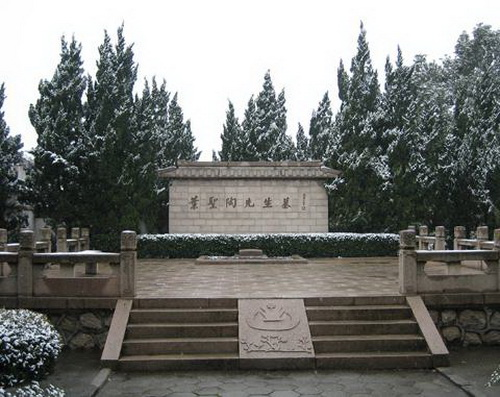

叶圣陶纪念馆

叶圣陶先生墓
叶圣陶1917年应聘到吴县甪直县立第五高等小学任教，他称甪直为自己的第二故乡。
叶圣陶纪念馆坐落在江苏省甪直镇 保圣寺西侧，馆名由李瑞环题写。叶老逝世后， 甪直人民将当年叶老执教的几处旧址重行修建，辟为叶圣陶纪念馆。纪念馆包括叶圣陶事迹陈列室、叶圣陶当年的执教旧址和叶圣陶墓，占地面积4000多平方米。叶圣陶事迹陈列室面积800平方米，展出资料、照片、实物近600件，展示了叶老光辉的一生 ；叶圣陶执教旧址中的鸳鸯厅、四面厅、女子楼等也均按原貌保存展示； 1988年叶圣陶因病在北京逝世后，其骨灰送回甪直，安葬于当年工作生活过的学校北侧，并建叶圣陶墓。墓台高1米、宽10米，墓碑面向东方，横镌赵朴初先生书写的 “叶圣陶先生墓”。墓台上平放花岗石棺椁。墓台正前方，有一长40米的墓道，中央建一六角形纪念亭，亭内悬挂叶圣陶书 “未厌”匾额。